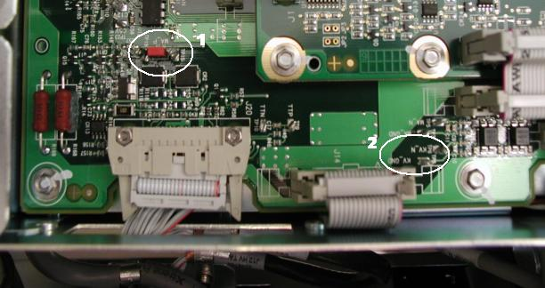
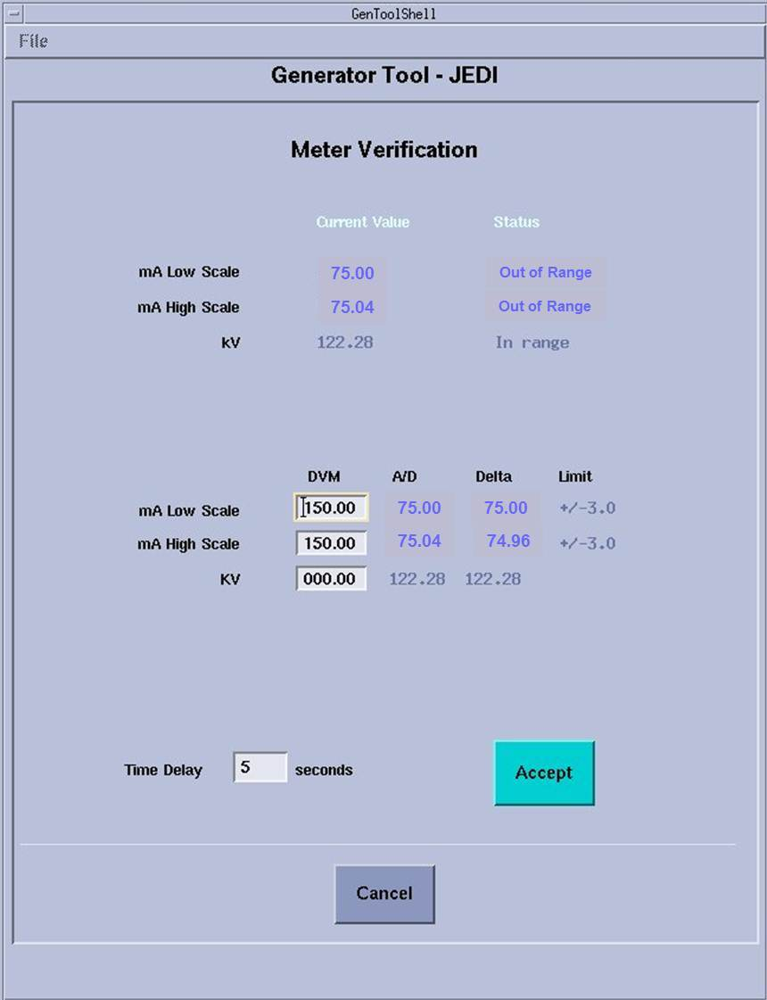
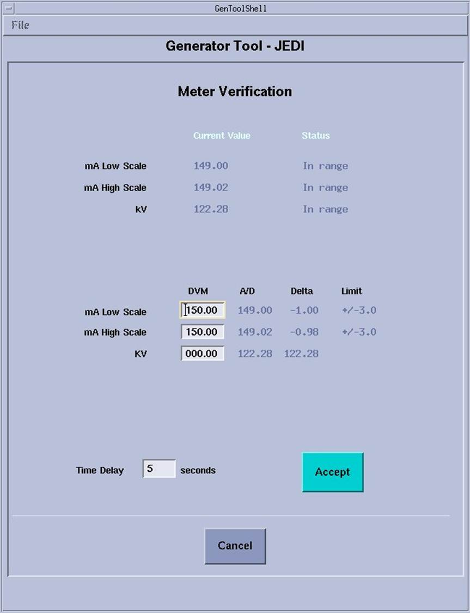
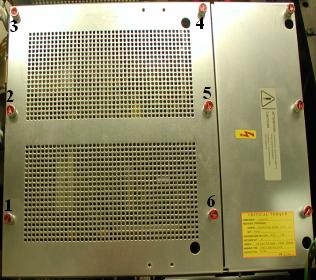

Operating Documentation
Direction 5193574-800, Rev# 22
LightSpeed 7.X Service Methods
Module Version 8.0, Version Date 8/25/14
Operating Documentation |
| Required Persons | Preliminary Reqs | Procedure | Finalization |
|---|---|---|---|
| 1 | Not Applicable | 20 mins | 10 mins |
This document provides the necessary steps to verify the Generator internal kV and mA metering circuitry calibration.
| Last Revised: | 31 July 2014 |
| Item | Qty | Effectivity | Part# | Manufacturer | |
|---|---|---|---|---|---|
| Digital Multimeter | 1 | - | Fluke 87III or similar (See Required Conditions) | Fluke or similar | |
| 0.45 N-m or 4 lbf-in Torque Driver with a Flat Blade Driver Bit | 1 | - | - | - | |
| ||||
| No personnel or patients should be in the area of the gantry while scanning without adequate radiation safety precautions being utilized. | ||||
| ||||
| Ground connected protective ESD device must be appropriately worn while working inside the Inverter chassis. Failure to use protective ESD device correctly may result in destroyed/damaged component. | ||||
| Condition | Reference | Effectivity |
|---|---|---|
For VCT type X-ray Generation Systems. | - | - |
Recommend procedure completion by GE Service trained personnel. | - | - |
X-Ray tube should be cold to avoid damage during power cycling. | - | - |
Digital Multimeter VDC Mode must have 10Mohm input impedance. | - | - |
Digital Multimeter must have a mA scale capability of 199.9mA. | - | - |
Digital Multimeter must have 3-1/2 digits display capability. | - | - |
Digital Multimeter must be capable of displaying at least 2 decimal places. | - | - |
Move table to longitudinal home position.
Remove gantry right side cover.
Turn off [HVDC ENABLE], [AXIAL DRIVE ENABLE] and [120VAC ENABLE] switches on Service Switch Panel.
Rotate gantry such that Inverter large cover is accessible.
Remove Inverter large cover.
Complete Preparation steps (See Sections 4.1).
Wearing a ground connected protective ESD device, remove jumper from Inverter Test Point TP17. (Item 1 in Illustration 1)
Illustration 1: Inverter Meter Test Points

Clip Digital Multimeter mADC signal RED lead to Inverter Test Point TP19 and Digital Multimeter common BLACK lead to Inverter Test Point TP15. (Item 1 in Illustration 1)
Turn on [120 VAC ENABLE] switch on Service Switch panel.
Press [ESTOP RESET] on Service Switch panel and wait until scan hardware is reset.
Turn on Digital Multimeter and select mADC setting.
Select [DIAGNOSTICS] from Service Desktop.
Select [GENERATOR TOOL - JEDI], or [X-RAY GENERATION], [GENERATOR TOOL - JEDI].
| NOTE: | Refer to Illustrations 4 (Unsuccessful) and 5 (Successful) for examples that are displayed on the CSD. |
Click [METER VERIFICATION]
Illustration 2: Meter Verification Unsuccessful test

Illustration 3: Meter Verification Successful test

| NOTE: | Time Delay is defaulted to 5 seconds. Time delay can be changed to give sufficient time to get to Digital Multimeter. |
Click [ACCEPT] and walk to Digital Multimeter.
Observe highest mA reading attained from Digital Multimeter, to one decimal place.
EXAMPLE: 147.3
| NOTE: | Measured value should be around 150 mA. |
Enter measured mA value in [MA LOW SCALE DVM] edit box and press [ENTER].
| NOTE: | Measured mA value will appear in the [MA HIGH SCALE DVM] edit box automatically. |
Verify [MA LOW SCALE DELTA] is within [MA LOW SCALE LIMIT], and [MA HIGH SCALE DELTA] is within [MA HIGH SCALE LIMIT].
| NOTE: | If Delta values are outside limits, replace Inverter and retest. |
Record results in the appropriate GE e4879 Installation form, GE e4879 Certified Component Verification form, or GE Data Report Planned Maintenance Schedule form.
Turn off Digital Multimeter.
Turn off [120 VAC ENABLE] switch on Service Switch panel.
Wearing a ground connected protective ESD device, remove leads from Inverter Test Points TP15 and TP19 and install jumper to Inverter Test Point TP17.
Complete Preparation steps (See Sections 4.1).
Wearing a ground connected protective ESD device, clip Digital Multimeter VDC signal RED lead to Inverter Test Point TP6 (KV_N) and Digital Multimeter common BLACK lead to Inverter Test Point TP8 (KV_GND). (Item 2 in Illustration 1)
Turn on [120 VAC ENABLE] switch on Service Switch panel.
Press [ESTOP RESET] on Service Switch panel and wait until scan hardware is reset.
Turn on Digital Multimeter and select VDC setting.
Click [ACCEPT] in Meter Verification window and walk to Digital Multimeter.
Observe highest volts reading attained on Digital Multimeter.
Calculate measured kV value by multiplying Digital Multimeter value by -10.
Enter measured kV value in [KV] edit box and press [ENTER].
Record results in the appropriate GE e4879 Installation form, GE e4879 Certified Component Verification form, or GE Data Report Planned Maintenance Schedule form.
Click [CANCEL] in Meter Verification window .
Click [DISMISS] in Generator Tool - JEDI window.
Turn off Digital Multimeter.
Turn off [120 VAC ENABLE] switch on Service Switch panel.
Wearing a ground connected protective ESD device, remove leads from Inverter Test Points TP6 and TP8.
Install Inverter large cover.
Position Inverter large cover over Inverter opening.
Starting with the lower left hand corner captive screw and following the order shown in Illustration 4, align each captive screw to the hole in the Inverter chassis and turn the screw clockwise until the screw engages with the hole.
| NOTE: | Captive Screw misalignment and/or over tightening could break the screw and get lodged in the inverter chassis causing irreparable damage. In the event that this happens, replace Inverter. |
| NOTE: | Complete this step for all six captive screws before performing step 1c. |
Illustration 4: LightSpeed VCT Inverter Large Cover Installation

Starting with the lower left hand corner captive screw and following the order shown in Illustration 4, torque each captive screw to 0.45 N-m or 4.0 lbf-in.
Turn on [120 VAC ENABLE], [AXIAL DRIVE ENABLE] and [HVDC ENABLE] switches on Service Switch Panel.
Press [ESTOP RESET] on Service Switch panel and wait until scan hardware is reset.
Install gantry right side cover.
Store data form with system history records.